- Overview
- Assigning Process Permissions
- Viewing the Permissions of a Process
- Accessing Case Objects with Process Permissions
- Dynaform Permission
- Attachment Process Permission
- Input Document Permission
- Output Document Permission
- Message History Permission
- Case Notes Permission
- Summary Form Permission
- Accessing the Change Log
- Process Permissions Example
Overview
By default, only assigned users can work on cases, Process Permissions can be used to grant a user(s) or group(s) read-only access to the objects in cases, which include Dynaforms, input and output documents, case notes, summary forms and message history.
| Warning: Note that the ability to access Input Documents is restricted also for the disable_download_documents_session_validation flag, which is enabled by default. For more information read the Input Document permission section. |
Only the user currently designated to work on a case can open the case. To allow other users the ability to see (but not change) the data in cases, they need to be assigned Process Permissions. Remember that if users need to have write access to cases, see Process Supervisor.
Process Permissions are designed to offer advanced control over how users access cases and what information they can view in specific tasks during the case.
Assigning Process Permissions
Assign Process Permissions to a user(s) or group(s) by going to the Designer tab and opening a process. Then, hover the pointer of the mouse over the (+) icon next to the Permissions option. Click on the Create button.

A new modal window will be shown where the user can configure the new process permission.

Where:
Case Status: Select the status the case must currently have to allow the user/group to access it. The options shown are the following:
- All: Gives the user(s) or group(s) access to all cases, no matter which status they have.
- Draft: Gives the user(s) or group(s) permission to access cases with the DRAFT status. It means that the current task of the case has started to be worked on (a step has been opened and saved), but hasn't yet been completed.
- To Do: Gives the user(s) or group(s) permission to access cases with TO_DO status. It means that the current task of the case has been assigned to a user, but hasn't been worked on yet (i.e., no steps have been saved yet).
- Paused: Gives the user(s) or group(s) permission to access cases that have been paused.
- Completed: Gives the user(s) or group(s) permission to access cases with the COMPLETED status. It means that the case has arrived at an end event and wasn't closed by canceling or deleting the case.
Target Task: Select the task where the case must be in the process to access the case. If the case is currently in any other task, then the selected user/group will not be able to open the case. For example: If the "Review Form" task has been configured as the target task, the selected process elements will only be accessible when the process reaches this specific task. To give access to the selected process objects no matter what the current task is, then select the All Tasks option.
Group or User: Enter the name of the user or user group that will have the permission in the process. When there is a large amount of users/groups, this field has a suggest property where a letter or a name can be typed and the field will filter the results based on what is typed in. This is a required field.

Origin Task: Select the task whose objects will be granted access to. The selected user/group will only be able to see objects related to this task. For example: If the "Send Form" task has been selected as the origin task, the selected process elements will only be accessible if they are currently assigned as steps of this specific task. To allow the user/group to see objects from all tasks, choose the All Tasks option.
Participation Required?: Select Yes if the user must have been previously designated to work on the case at some prior point to have permission to access the case. Select No if the user doesn't need to have been designated to work on the case to open it. Note that selecting Yes means that the user will only have the process permission to open the case after they have worked on the case, and not throughout the whole process.
Type: Select the type of objects that the user or group will be given access to. They can be:
- Attachment
- Dynaforms
- Input Documents
- Output Documents
- Case Notes
- Message History
- Summary Forms (only available in the Enterprise Edition)
If one of the first three options is chosen, Dynaform, Input Document, Output Document, then a field below the Type field will be displayed to select the specific object(s) that can be accessed (all Dynaforms, input and output documents that are inside the process).
Permission: Select one of the options:
- View: This option allows the user or group to open the case and view its object(s).
- Block: This option prevents the user or group from opening the case and viewing its objects. Read more about the Block permission here.
- Delete: This option is only available if the user selects "Input Document" or "Output Document" as the type. It allows the user to delete document(s) that are assigned as a task's step.
This option is not displayed if the type of the permission is Case Notes or Case Summary. In these cases, the permission is set to View by default.
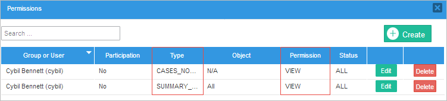
Cancel button: Click on this button to cancel the creation of the new permission.
Save button: After setting all the necessary conditions to create the permission, click on this button to save it.
Take into account that multiple process permissions can be used in combination to block a small subset of users or block access to a small subset of objects. First, create a general permission with the VIEW option. Then, create more specific permissions that BLOCK access to that smaller subset of users or objects. Read this section to learn more.
Viewing the Permissions of a Process
View the permissions of the process by going to the Permissions option.

The modal window that appears will show a list of all permissions given in the process.

- Search: In this field, enter the name of the user or group that has a process permission. This field has the auto complete property, so all matches will be listed while entering text.
- Create: Click on this button to create a new permission. The modal window that opens is explained above.
- Group or user: This column lists the groups or users who have been given a process permission. Note that the list can be resorted in alphabetical order by clicking on one of the column headers. Click again to switch the sort order from ascending to descending or vice versa.
- Participation: Shows whether the participation of the user in the case is required to view the case.
- Type: Shows the type of objects (Dynaforms, input documents, output documents, case notes, message history or all) the user has access to.
- Object: Shows the specific object(s) that the user may access, depending on the selected type.
- Permission: Shows the type of permission, which may be "view", "block" or "delete".
- Status: Shows the status (ALL, TO_DO, DRAFT or COMPLETED) the case must have for the user or group to have access to it.
- Edit: Click to edit the settings of the permission.
- Delete: Click on this button to delete a process permission, and a delete confirmation dialog will be displayed.
- Pagination control: Use this control to navigate through the pages of permissions, which are displayed ten at a time.
Using the BLOCK Permission
The BLOCK permission is used in combination with a VIEW permission. Use the VIEW permission to create a general class that has access to an object, then create additional BLOCK permissions to remove specific users or objects from that general class.
For example, if it is necessary for all users in a group named "Employees" to have access to a Dynaform except user jane_doe, then first create a VIEW permission to grant the Employees group access to the Dynaform. Then, create a second BLOCK permission to prevent user jane_doe from accessing the Dynaform.
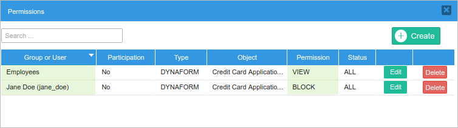
BLOCK permissions can also be used to remove objects from a general class. For example, to give users access to all the objects in a case except the final output document, which contains sensitive information, then first create a VIEW permission with Type set to "All". Then create a second BLOCK permission with Type set to "Output Document" and select the particular output document to block.

Note: As of ProcessMaker 3.2.2, if a permission has an Input Document, Output Document or Message History type selected, the Block permissions applies when the user does not generate information. If the user generates information (as upload a document to the case, generate an output document or send a message history), the BLOCK permission is not available.
How Permissions are Calculated
Take into account the following rules:
When a user is assigned to more than one permission, VIEW permissions are added together. In contrast, BLOCK permissions are subtracted.
For example, if a user has been assigned the following list of permission rules:
- Permission Rule 1 VIEW (Positive)
- Permission Rule 2 VIEW (Positive)
- Permission Rule 3 BLOCK (Negative)
- Permission Rule 4 VIEW (Positive)
- Permission Rule 5 BLOCK (Negative)
The final process permissions will be calculated in this way:
Positive (VIEW) permissions are added (OR):
Permission Rule 1 positive OR Permission Rule 2 positive OR Permission Rule 4 positive And negative (BLOCK) permissions will be subtracted (AND)
AND Permission Rule 3 negative AND Permission Rule 5 negative The resulting permissions will be calculated like so:
(Permission Rule 1 positive OR Permission Rule 2 positive OR Permission Rule 4 positive) AND Permission Rule 3 negative AND Permission Rule 5 negative 
-
Adding the SUMMARY permission as follows:
- Permission Rule 1 BLOCK.
- Permission Rule 2 SUMMARY.
Or:
- Permission Rule 2 SUMMARY.
- Permission Rule 1 BLOCK.
In both cases, the SUMMARY permission is the most important permission over the BLOCK.
Accessing Case Objects with Process Permissions
After process permissions have been assigned to users or groups, if the user is or were assigned to the case, the case object can be access by going to the Home tab, and opening the case using one of the following folders:
They can access to the case object by and searching for the case using the Jump to option.
If the user isn't assigned to the case and hasn't participated in the case, then the case can be accessed:
- Using the advanced search, which is only available to users who have the PM_ALLCASES permission in their role.
- Using the Jump To option, which can be found in the Inbox, Draft, Participated, Unassigned, and Paused folders.
Dynaform Permission
A Dynaform permission allows the user to view the Dynaform(s) by going to Home and opening a case. Then, go to the Information submenu and select the Dynaforms option to see a list of available Dynaforms the user has access to:

To view a Dynaform, select it in the list, and click on the Preview button in the toolbar. The Dynafom will open in a new tab in read-only mode.
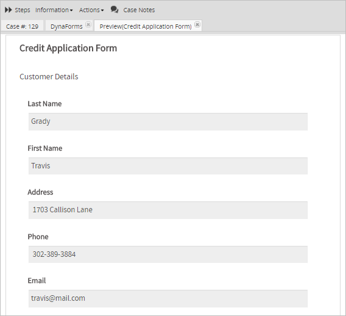
Attachment Process Permission
Available Version: As of ProcessMaker 3.2.2.
An Attachment process permission allows users to download files that were uploaded using a Multiple File Uploader control that was not related to an Input Document when the disable_download_documents_session_validation flag is enabled.
If the user does not have an Attachment process permission, he/she will be restricted from downloading the attached files and an error 403 message will be displayed.

Input Document Permission
An Input Document permission is used to grant access to the input documents of a case in the following two scenarios:
Users that are NOT assigned to the case: This permission allows users that are not assigned to the case, to see the case's input documents by opening a case, going to the Information submenu and selecting the Uploaded Documents option. A list of available input document files will be displayed in a new tab.

To view a file, first select it and click on the Download option in the toolbar. The configuration of your web browser will determine how the file is opened or saved.
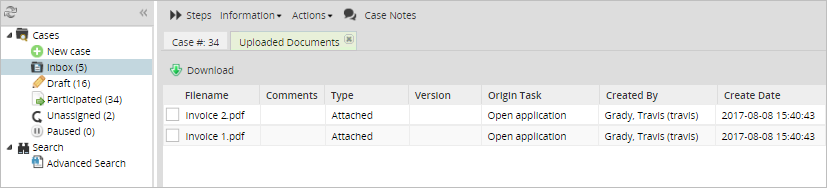
The same list of input documents can be seen in the Uploaded Documents tab inside the Case Summary if the user has the Input Document permission.
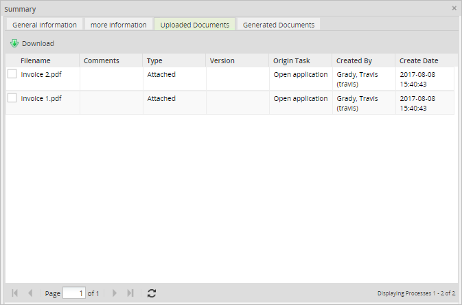
Users assigned to the case: If the disable_download_documents_session_validation flag is set to "0" or is not included in the env.ini file, the user will be restriced from downloading input documents. Therefore, even if the user is assigned to the case, he/she will need an Input Document process permission to download input documents.

Otherwise, a "403 Access denied" error message will be displayed:
Note: If the user assigned to the case is the same user who uploaded the input documents, the Input Document permission is not needed.
Deleting Input Documents
An Input Document permission of Delete type allows users to delete input documents that were assigned as a task's step.
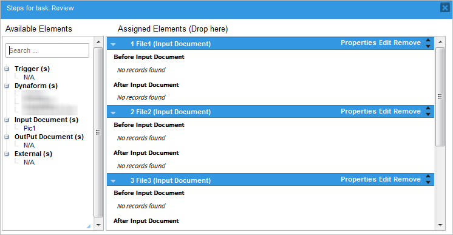
To delete an input document, create a process permission and set its type as "Input Document" and the Permission field as "Delete", as shown in the image below:

Then, go to Home and open the case. Go to the Steps button and select the input document in the list of steps.
Note: Remember that only users who are assigned to the case or are Process Supervisors have access to the Steps button, so unassigned users who need to delete input document files should also be assigned as Process Supervisors and given access to the input document object. These users need to have the PM_SUPERVISOR permission in their role.
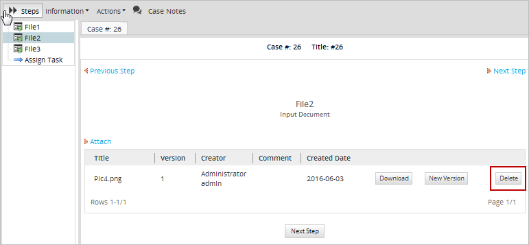
The Delete button will be available in the documents defined in the Object field of the permission. After clicking on it, the following confirmation message will be displayed.
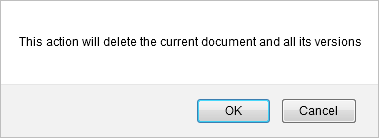
Finally, click on OK to delete the file or click on Cancel to close the message.
Output Document Permission
An Output Document permission allows users to see the output documents generated in a case by opening a case, going to the Information submenu and selecting the Generated Documents option.
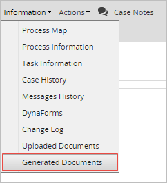
The list of output document generated in the case will be displayed in a different tab.

To download one, select a document to enable the Download (both .doc and .pdf formats, depending on the output document's configuration) buttons. Click on either of them to begin the download. The configuration of your web browser will determine how the file is opened or saved.
The same list of output documents generated in the case can be seen in the Generated Documents tab of the Case Summary.
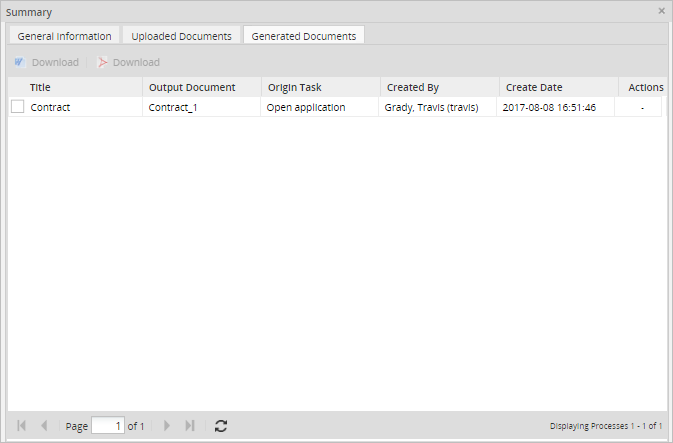
Deleting Output Documents
If accessing the list of output documents with an Output Document permission of Delete type, each element listed in the output document list will have a Delete button on the right-hand side, as shown in the image below.

The Delete button will also be available in the Generated Documents tab of the Case Summary.

Message History Permission
By default, users can see the list of the email messages that were sent during a case if they have access to the message history. This permission restricts or allows the ability to see the content of, re-send or block the emails sent during a case.

To add a permission, open Process Permission and in Type select Message History.
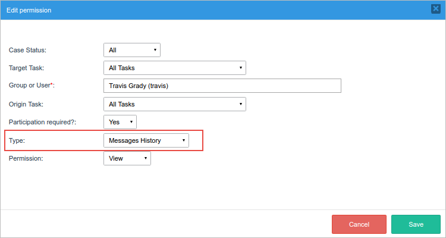
Configure the following fields:
- Participation required?:
- Yes: Only messages in cases that the user with the permission has participated in will be able to be seen, resent or blocked, depending on the type of permission.
- No: The type of permission will be applied to all the messages sent during the case.
-
Type of permission:
View: Users will have permission to view the message content.
For example, as shown in the image below, a permission with the View type was assigned to the user named Travis to grant him the ability to see the content of the emails sent in all completed cases he participated in.

Therefore, the user Travis will be able to see the content of the messages in completed cases he has participated in.

Block: Users won't see any messages listed in the Message History.
For example, as shown in the image below, the user named Travis has a Block permission.
Therefore, the user Travis won't see any messages listed in the Message History tab in any of the cases of the process.

Resend: Users will have the resend option available next to each message.
For example, as shown in the image below, the user named Travis is assigned a resend permission to be able to resend all the messages in the case, whether he has participated or not.

The user Travis will see the resend icon enabled next to each message in the list.
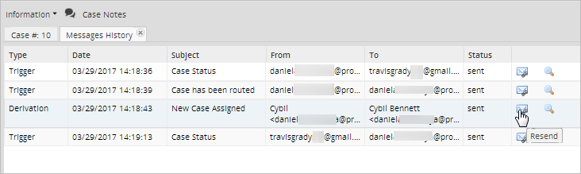
After clicking the resend option, a dialog will be displayed to confirm the action.

Case Notes Permission
A Case Notes permission allows users to access and post case notes in a case.
To access case notes, go to one of the case lists (Inbox, Draft, Participated, Unassigned, or Paused) under the Home panel, and click on the  icon of a case. The notes of that particular case will be displayed in a separate window.
icon of a case. The notes of that particular case will be displayed in a separate window.

Case notes can also be accessed by opening a case and clicking on the Case Notes button in the toolbar.

Summary Form Permission
| Warning: This permission and feature are only available in the Enterprise Edition. |
A Summary Form permission allows users to see the custom Dynaform selected in the Dynaform to show a case summary option in the process configuration.

This Dynaform is displayed in read-only mode in the More Information tab under the Case Summary option, or when opening a case using the Jump To option or a case link (read this section for more information).

To grant a Summary Form permission to users or groups, open a project for editing and create a new permission. In the Type field, select the Summary Form option and define the other properties of the process permission.

If the user doesn't have the Summary Form permission and tries to see the content in the More Information tab of the Case Summary, the following message will be displayed:

Viewing the Custom Dynaform when Opening a Case
A user that hasn't participated in the case, is not a supervisor of the process and doesn't have the PM_ALLCASES permission assigned to their role does NOT have access to the case. Therefore, if the user opens the case using the Jump To option or a case link, only the case's general information will be displayed.

Nevertheless, if the user has a Summary Form permission and a Dynaform has been selected in the Dynaform to show a Case Summary option in the process configuration, the selected Dynaform will be displayed when the user uses the Jump To option or a case link to open a case.

In ProcessMaker 3.2, this feature works only in cases with a TO DO status. As of ProcessMaker 3.2.1, the custom Dynaform will be displayed in cases with a TO DO, DRAFT, PAUSED, CANCELLED, UNASSIGNED and COMPLETED status.
Accessing the Change Log
The Change Log section displays the changes of the variables' values after each step of each task in the process. This includes all modified and unmodified variables in each step, including before and after triggers.
Data Changes
The Change Log functionality registers the variable value changes after each step. For example, if a task only has one step:
Therefore, if the task has two steps, then the log will register the changes twice:
Note: Modifications made by Supervisor Users will be reflected in the change log.
Permissions and Access
All variables modified in each step (including before and after triggers) are displayed in the Change Log section only if the user has the proper permission.
Note: Users who do not participate in any of the tasks defined in the permission need the PM_ALLCASES permission to search for the case using the Advanced Search option and have access to the Change Log option.
To allow users to access the change log in a specific task(s), create a process permission with the type "Dynaform" and assign the users using the Group or User field. An example of the permission is shown below:.
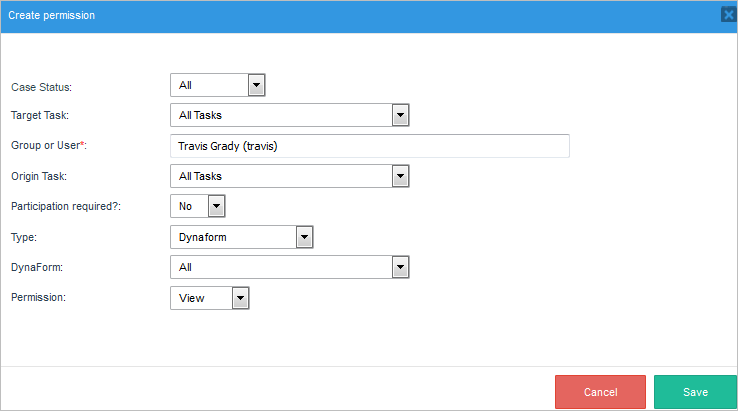
Access the change log by going to Home and opening a case. Then, go to the Information submenu and select the Change Log option.

A new tab will display the content of the variables, as well as their values and changes throughout each step, as shown in the image below:

The change log will specify the following:
-
- Field Name: Name of the field that was modified. Usually the name that is displayed is the name given when the field was created.
- Previous Values: If changes were made, the previous values will be displayed in this field.
- Current Values: Displays all the fields and their modified values.
Process Permissions Example
In this example, a new process permission will be created that gives a user, who is not assigned to any task, access to view a Dynaform named "Order Request Form."
The process in this example is the following:
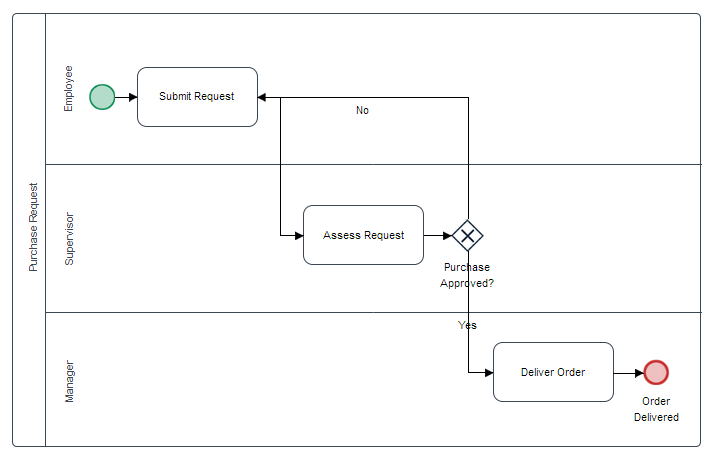
Each task in the process has a Dynaform assigned as a step:
| Task | Dynaform Assigned |
| Submit Request | Order Request Form |
| Assess Request | Assess Request Form |
| Deliver Order | Deliver Order Form |
A user must be created for this example. Go to Admin, and in the Users tab, click on New.
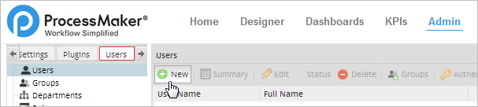
This will lead to another window where personal information about the new user must be filled in. As seen in the image below, only the required fields were filled in for the purpose of this example. The new user will be "James Sunderland" and he will have the role of "Operator", plus the PM_ALLCASES permission to search the case. Give a password to the new user and then click on Save to store their information.

After creating the new user, go to the Designer tab and open the process being worked on. In the Process Objects toolbox, go to Permissions and create a new permission by clicking on Create.

Once in the Create permission window, configure the new permission as follows:
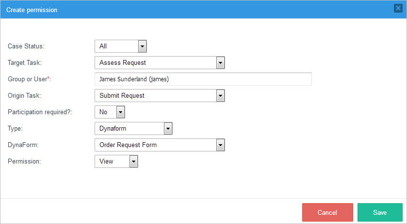
- Case Status: Select ALL so the user will be able to use this permission no matter the case status.
- Target Task: Select the Assess Request task. The case should be in this task when the process permission is used.
- Group or User: Assign the user created earlier, named "James Sunderland", by typing a "J" in the suggest box and selecting his name from the list of suggested users.
- Origin Task: Select the "Submit Request" task. This task has the Order Request Form Dynaform assigned as a step.
- Participation Required?: Choose No since the user is not designated to work on this process.
- Type: Choose Dynaform, because in this example James needs to see the Order Request Form Dynaform.
- Dynaform: Choose the Order Request Form Dynaform from the available Dynaforms in the dropdown menu. Note that this field will become available after choosing "Dynaform" in the Type field.
- Permission: Select View to give the user access to see the Dynaform previously selected.
Click on Save to maintain all changes. After saving, the permission created will be listed in the Permissions window.

To make sure the permission works, run a case by going to Home, then New Case in the left menu, and choosing the case that was given the permission created.

Since the permission's target task is the Assess Request task, the case has to be routed to this task.
Log in to ProcessMaker with the user named "James". Remember that James wasn't assigned to any of the tasks in the Purchase Request process, but his role has the PM_ALLCASES permission, so he can search through all the cases using the Advanced Search option. Remember that James wasn't assigned to any of the tasks in the Purchase Request process, but his role has the PM_ALLCASES permission, so he can search through all the cases using the Advanced Search option. Enter the case number of the case created before, which in this example is #25, in the box next to the Search button and the case will be listed.

Open the case and the case details will be displayed.

In the Information tab choose Dynaforms.
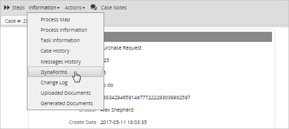
The user will be able to see the Dynaform selected during the creation of the process permission. In this example, the "Order Request Form" Dynaform will be listed. Check the box next to the Dynaform's name and click on Preview to see the Dynaform's content.

The Dynaform will be displayed in read only mode.